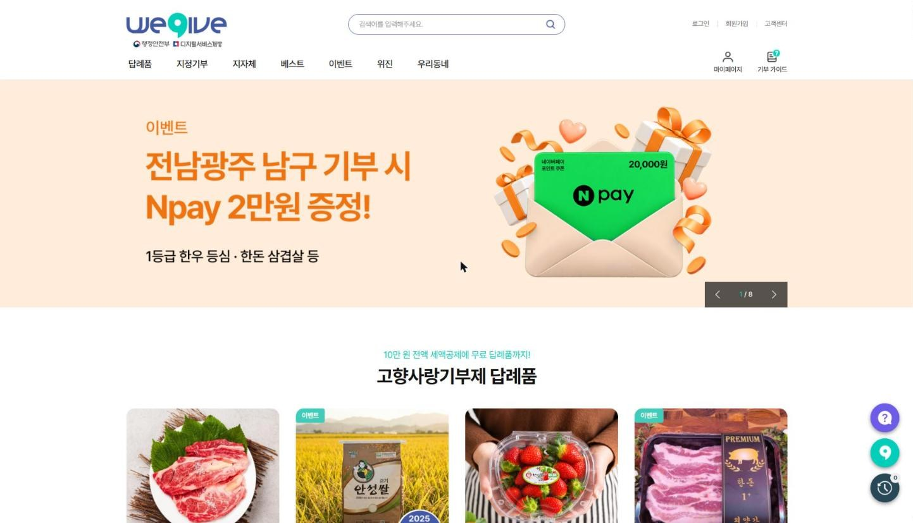

위기브 기부 모금 플랫폼Wegive donation platform
포비즈코리아Forbiz Korea
고향사랑기부 플랫폼의 커뮤니티와 운영 기능을 개발했습니다.
I built community and operations features for a hometown donation platform.
- 문제Problem
- 신고 처리와 입점 문의가 수작업으로 흩어져 있었습니다.Report handling and onboarding inquiries were manual and scattered.
- 접근Approach
- UGC 신고와 차단, 지자체 셀러와 입점 문의 관리 기능을 개발했습니다.I built reporting and blocking for user content, and seller and onboarding inquiry management.
- 결과Result
- 운영 프로세스를 표준화했습니다.Operations were standardized.
- 역할Role
- 지자체 구조 설계, 백엔드 개발Local government structure, backend
- 기간Duration
- 4개월4 months

Service
고향사랑기부제 플랫폼입니다. 기부자가 지자체를 골라 기부하면 연말정산에서 10만 원까지 전액 세액공제를 받고, 그 지역의 답례품을 받습니다. 답례품, 지정기부, 지자체, 베스트, 이벤트 메뉴가 있고, 지자체와 답례품을 공급하는 셀러가 함께 쓰는 서비스입니다.
A platform for Korea's hometown donation program. A donor picks a local government to give to, gets a full tax credit up to 100,000 won at year-end settlement, and receives a gift from that region. It has sections for gifts, designated donations, local governments, best picks and events, and is used by local governments and by the sellers who supply the gifts.
Problem
사용자가 올린 글에 대한 신고를 운영자가 수작업으로 처리했고, 지자체와 셀러의 입점 문의는 메일과 전화로 흩어져 있었습니다.
Operators handled reports on user posts by hand, and onboarding inquiries from local governments and sellers were scattered across email and phone.
What I did
- 지자체 구조 설계Local government structure
- 지자체, 셀러, 답례품의 관계를 계층 구조로 설계하고, 지자체별로 권한과 데이터 접근 범위를 분리했습니다.I designed local governments, sellers and gifts as a hierarchy, with permissions and data access scoped per local government.
- UGC 신고와 차단 기능 개발Reporting and blocking for user content
- 사용자가 올린 글을 신고하고 다른 사용자를 차단하는 기능을 개발했습니다.I built the features for reporting user posts and blocking other users.
- 지자체 셀러와 입점 문의 관리Seller and onboarding inquiry management
- 지자체 셀러와 입점 문의를 관리하는 기능을 개발했습니다.I built management for local government sellers and onboarding inquiries.
- 셀러(지자체)별 맞춤형 홈페이지A home page per seller (local government)
- 지자체마다 자기 지역의 답례품과 소개를 보여 주는 전용 홈페이지를 개발해, 지역마다 다른 화면을 보여 주도록 했습니다.I built a dedicated home page for each local government showing its own gifts and introduction, so every region has its own storefront.
- 입점과 제휴 문의 관리Onboarding and partnership inquiries
- 입점 문의와 제휴 문의를 관리자 화면에서 접수하고 처리하도록 만들어, 지자체와 셀러를 들이는 과정을 한곳에서 관리하게 했습니다.Onboarding and partnership inquiries are received and handled in the admin screens, so bringing in local governments and sellers is managed in one place.
- 지자체 홈페이지의 구성 방식How the per-government pages are built
- 공통 템플릿에 지자체별 데이터를 채우는 방식으로 만들어, 새 지자체가 들어와도 코드를 고치지 않고 관리자 화면에서 등록만 하면 됩니다.The pages are one shared template filled with each government's data, so a new local government is registered in the admin screens without changing code.
- 차단의 범위What blocking covers
- 사용자가 다른 사용자를 차단하면 그 사람의 글과 댓글이 보이지 않게 했습니다. 신고가 쌓인 글은 관리자가 확인하기 전까지 가려 둡니다.When a user blocks someone, that person's posts and comments disappear for them. Posts with repeated reports stay hidden until an admin reviews them.
- 문의 처리 상태Inquiry status
- 입점 문의를 접수, 검토, 답변 완료로 나눠 관리하고 담당자를 지정할 수 있게 했습니다.Onboarding inquiries move through received, in review and answered, and each can be assigned to an owner.
Hard parts
- 신고 기능은 악용될 수 있습니다. 신고만으로 글이 완전히 사라지지 않고 관리자 검토를 거치도록 했습니다.Reporting can be abused. A report alone does not remove a post for good, and an admin review is required.
Result
신고와 차단, 셀러와 지자체 관리, 지자체별 홈페이지, 입점과 제휴 문의 관리의 네 가지 기능을 4개월 안에 전달했습니다. 운영자가 따로 처리하던 일을 관리자 화면 안으로 모아 운영 프로세스를 표준화했습니다.
In four months I delivered four features: reporting and blocking, seller and local government management, per-government home pages, and onboarding and partnership inquiry management. Work operators handled separately moved into the admin screens, which standardized operations.
What I learned
- 운영자가 손으로 하던 일을 화면으로 옮기면, 일의 순서가 그대로 표준 절차가 됩니다.Moving what operators did by hand into a screen turns the order of the work into the standard procedure.